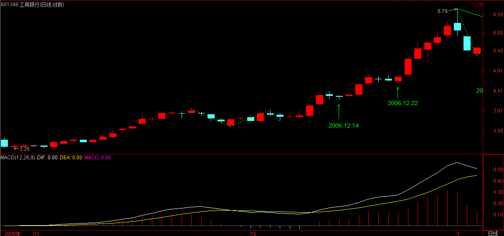

(2007-01-05 15:23:22)
【韶山映山红】原文配图是000912泸天化的日K线图，新浪博客自动更新为当下的新图，这里贴上当时的日K线图。】
前面已经很明确地指出，缠中说禅走势中枢由前三个连续次级别走势类型的重叠部分确定，其后的走势有两种情况：一、该走势中枢的延伸。二、产生新的同级别走势中枢。【韶山映山红】本级别的走势只有这两种。扩张升级也被视为“产生新的同级别走势中枢”。】
而在趋势里，同级别的前后缠中说禅走势中枢是不能有任何重叠的，这包括任何围绕走势中枢产生的任何瞬间波动之间的重叠。【韶山映山红】中枢不能有任何重叠的，说的是两个中枢震荡区间不能重叠。这包括任何围绕走势中枢产生的任何瞬间波动之间的重叠。】
因此，如果三个连续次级别走势类型的重叠区间虽然不和前面的走势中枢有任何重叠，【韶山映山红】后中枢的[ZD，ZG]不和前面中枢的[ZD，ZG]重叠。】但围绕该中枢产生的波动触及前面走势中枢延续时的某个瞬间波动区间，【韶山映山红】后中枢的[DD，GG]和前面中枢的[DD，GG]有重叠。】这时候，就不能认为该走势类型是趋势，而只是产生一个更大级别的缠中说禅走势中枢。【韶山映山红】两个中枢的[DD，GG]有重叠，就不能认为该走势类型是趋势。不是趋势，也就意味着还在盘整的继续演化中。除非及时的非背驰脱离这个区域，否则必然会形成更大级别盘整。】
【韶山映山红】a+A+b走势，一旦形成第二个中枢，走出a+A+b+B的形态，就可以视为趋势的形成，不需要B中枢的第三类买卖点来确认。但A中枢不能再被触及。一旦触及，
这里，必须把两种情况严格区分。【韶山映山红】两种情况：延伸，扩张。】
一、走势中枢以及其延伸。这种情况下，所有围绕走势中枢产生的前后两个次级波动都必须至少有一个触及走势中枢的区间。【韶山映山红】实际上是每一个次级别离开和返回都触及中枢区间，那么，为什么说“所有……前后两个……都必须至少有一个……”，而不是直接说每一个？★以后研究。】因为，任何前后两个次级别，总有一个是Zn，Zn触及中枢区间才是关键。】否则，就必然产生一个新的三次连续次级走势类型的重叠部分离开原来的走势中枢，这与走势中枢的延续矛盾。【韶山映山红】中枢延伸就等价于中枢没有结束。后面的定理“走势中枢的延伸等价于任意区间[dn，gn]与[ZD，ZG]有重叠”算是正式的定义，强调每一个Z走势段都与中枢区间有重叠。】“新的三次连续次级走势类型的重叠部分离开原来的走势中枢”，这句话的意思是说，“新的三次连续次级走势类型”的两个都没有“触及走势中枢的区间”，第三个即使“触及走势中枢的区间”，也算是“重叠部分离开原来的走势中枢”。换句话说，形成了新的[ZD，ZG]，和前面中枢的[ZD，ZG]没有重叠。】
二、一个走势中枢完成前，【韶山映山红】这里所说的“完成”，是指出现第三类买卖点的中枢完成。】其波动触及上一个走势中枢或延伸时的某个瞬间波动区间，【韶山映山红】波动区间[DD，GG]。“走势中枢完成前”，“走势中枢或延伸时”，这里明确了：中枢前三段的波动也属于[DD，GG]，也参与比较。】由此产生更大级别的走势中枢。【韶山映山红】“由此产生”，没说已经形成。】
【韶山映山红】给人的感觉，这里说的都是中枢的震荡区间，没有明确[ZD，ZG]在关系判断里是否有什么不同。★以后研究。】
一个简单的例子就能区别以上的情况，【韶山映山红】区别第一段里说的“走势中枢的延伸”和“产生新的同级别走势中枢”两种情况。】例如，一个股票开盘立刻封涨停，那么，只能算是一分钟级别上出现了走势中枢的延伸，无论这个延伸有多长时间，都不可能产生更大级别的走势中枢。【韶山映山红】这时候还没有引入延伸震荡升级的概念，所以说，无论这个延伸有多长时间，都不可能产生更大级别的走势中枢。】如果该股票第二天开始继续开盘涨停，那么就形成一个一分钟级别上的趋势，这个趋势可以无限延伸下去，但只要依然只是只形成一分钟的走势中枢，无论能连续涨停多少天，都不足以形成即使是五分钟的走势中枢，【韶山映山红】涨停算最低级别“走势中枢的延伸”，连续涨停算不断“产生新的同级别走势中枢”。】除非中途有打开涨停的时候。还有一种特殊的情况，就是所谓的庄股，如果有一个庄家特别有毛病，每天就成交一次，每天的价位都一样，这样也只形成一个一分钟的走势中枢，大级别的中枢都不能形成。【韶山映山红】相当于连续若干天的一字板，算最低级别“走势中枢的延伸”。】
换言之，走势中枢的延伸与不断产生新的走势中枢并相应围绕波动互不重叠而形成趋势，在这两种情况下，一定不可能形成更大级别的走势中枢。【韶山映山红】这里说，中枢的延伸，趋势的延伸，两种情况都不带来中枢的升级。但后面的课程会说到，中枢的延伸会带来盘整走势的升级。★】
而要形成一个更大级别的走势中枢，必然要采取第三种的方式，就是围绕新的同级别走势中枢产生后的波动与围绕前中枢的某个波动区间产生重叠。【韶山映山红】“必然要采取第三种的方式”，是说中枢演变的三种方式里面的第三种方式。第一种方式：走势中枢的延伸。第二种方式：不断产生新的中枢并且波动区间互不重叠而形成趋势。第三种方式：前后中枢的波动区间有重叠而引起中枢扩张。】
【韶山映山红】“围绕前中枢的某个波动区间”给人的感觉是不包括中枢区间。★以后研究。】
由此可马上得到一个重要的定理：
缠中说禅走势级别延续定理一：【韶山映山红】“走势级别延续”，延续的是级别，而不是走势类型。★】
在更大级别缠中说禅走势中枢产生前，该级别走势类型将延续。也就是说，只能是只具有该级别缠中说禅走势中枢的盘整或趋势的延续。【韶山映山红】不是说更大级别中枢产生前，原来的盘整还接着延续盘整，原来的趋势还接着延伸趋势。而是说原来级别的一切都还在那个级别。举个例子，假如原来一堆的5分钟盘整或趋势在一起玩儿，在30分钟级别中枢产生前，接着还是一堆的5分钟盘整或趋势在一起玩儿。级别还是那个级别，一直到更大级别的中枢产生。有点像科幻小说里的维度空间，没有四维（大级别中枢）产生前，三维的永远是三维，不会到四维。】
【韶山映山红】更大级别中枢产生的方式：中枢扩张升级，中枢延伸升级，次级别走势类型重叠形成。】
【韶山映山红】关于这个延续谁的问题，再重申一下，大家都理解错了。就像缠师解说论语，首先要更正断句的问题一样，这里有断句的问题。“该级别走势类型将延续”，简化一下，是“该级别将延续”？还是“该走势类型将延续”？一般都理解为走势类型的延续。我平时也只注重定理的内容，在这里特别注意了一下定理的名字：“走势级别延续定理”，一下子惊到自己了！走势级别的延续啊！否则就应该叫“走势延续定理”或“走势类型延续定理”了。所以这个问题和很多人发生了争辩，我有信心坚持我的解读，请大家多绕几圈仔细理解，欢迎找我讨论。】
【韶山映山红】正确的理解原文以后，面临一个新的问题：这条定理有什么用？简直是正确的废话啊！肯定还有问题。留给时间。以后研究。★★★
【韶山映山红】研究结果：这条定理的作用就是阐述递归的路径。先是本级别走势类型的各种运动，然后是形成高级别中枢，然后高级别中枢再构成高级别走势。 先有蛋还是先有鸡？在缠论的早期，中枢和走势类型是互相循环定义的。这条定理就阐述了先有中枢，后有走势类型。至于最早的中枢哪里来？早期的初始化是最低级别三个Ｋ线的重叠构成中枢，后期的初始化是三个线段重叠构成中枢。】
看看去年指数的走势，就知道该定理的重要。
很多人总是说，怎么都涨那么多了还涨，明白这个定理，就知道，要这个市场跌，现在这种最多只出现过日线走势中枢的走势，在周线走势中枢出现前，不可能结束。【韶山映山红】只出现过日线走势中枢的走势，不表示不会见顶，一样的可以有日线背驰而结束趋势，或者小转大而引起日线级别的转折而结束日线级别的趋势。这里说的“结束”是结束什么？为什么“周线走势中枢出现前，不可能结束。”？以后研究。★★★】而且，从去年8月份开始的走势，甚至连日线的走势中枢都没形成过，
最多就是30分钟的，
要结束这种走势，首先要形成日线的中枢。明白这个定理，就不会整天自己吓自己。
这里由定理一很简单就能证明一个更重要的定理对走势改变给一个更精确、预先的界定：【韶山映山红】怎么证明？★还是走势级别延续定理，所以这里说的“对走势改变”还是指走势级别的改变。这个定理是一个“预先的界定”，也就是说，可以对下一步的走势做一个预判，有点像未来函数。】
缠中说禅走势级别延续定理二：更大级别缠中说禅走势中枢产生，当且仅当围绕连续两个同级别缠中说禅走势中枢产生的波动区间产生重叠。
【韶山映山红】如果只关注“更大级别缠中说禅走势中枢产生”，这条定理就说得绝对了，“当且仅当”，让人感觉更大级别中枢的产生只有这个唯一的方式。实际上前面课程就说过，次级别走势类型的重叠可以构成本级别中枢，也就是说，那才是最平常意义的更大级别中枢的产生方式。这条定理说的已经是第二种方式了。后面还将说到，中枢延伸也可能导致升级。那么，如何理解这条定理呢？打个比方，我们小学的时候，1-2=？同学们都会说：不能减！有了负数概念之后就可以减了。这条定理也是这样。】
【韶山映山红】如果只关注的是“走势级别延续”，】
这里来一个比喻就好理解了，缠中说禅走势中枢就如同恒星，和围绕该恒星转动的行星构成一个恒星系统。【韶山映山红】中枢是恒星，其他行星就是次级别走势形成的不是中枢的各种结构。】
而两个同级别恒星系统要构成一个更大级别的系统，首先必然要至少是其中的外围行星之间发生关系，这就是定理二说的东西。【韶山映山红】这个举例真心理解不了。我有个比喻，像是敌后根据地，都有自己的中枢领导，活动范围有交叉就连片升级了，在更大级别是一个大的根据地，在本级别又是各自独立的根据地。】
有了上面的定理，就可以很精确地讨论走势中枢的问题了：【韶山映山红】两个定理，简单说就是，大中枢产生的方式是扩张升级。没有产生更大级别中枢的时候，原级别就延续。先有定理，然后才“可以很精确地讨论走势中枢的问题”。】
【韶山映山红】“上面的定理”说的是两个“走势级别延续定理”：没有大中枢就级别延续，两个中枢震荡重叠才有大中枢。为什么“很精确地讨论走势中枢的问题”需要先有这两个定理呢？★因为，所谓“很精确地讨论”，就是在数学上对中枢的定义做全方位的描述，而中枢的定义，就是递归定义。中枢是递归的路径，级别是递归的结果。“上面的定理”，一个说的就是递归路径，一个说的就是递归方法。】
根据走势中枢的数学表达式：A、B、C，分别的高、低点是a1\a2,b1\b2,c1\c2，则中枢的区间就是[max（a2,b2,c2），min（a1,b1,c1）]。【韶山映山红】中枢的区间[ZD，ZG]。】
而中枢的形成无非两种，一种是回升形成的，一种是回调形成的。【韶山映山红】回升中枢是“上下上”，回调中枢是“下上下”。从走势方向上来看，都是“回”，不折腾就没有中枢。】对于第一种有a1=b1,b2=c2；【韶山映山红】回升中枢。】对第二种有a2=b2,b1=c1。【韶山映山红】回调中枢。】但无论是哪种情况，中枢的公式都可以简化为[max（a2,c2），min（a1,c1）]。【韶山映山红】中枢的公式就是对中枢重叠区间的描述。中枢的区间[ZD，ZG]。】
显然，A、C段，其方向与中枢形成的方向是一致的，【韶山映山红】“中枢形成的方向”是指“回升”和“回调”，与所在走势的方向相反。】由此可见，在中枢的形成与延伸中，由与中枢形成方向一致的次级别走势类型的区间重叠确定。例如，回升形成的中枢，由向上的次级别走势类型的区间重叠确定，反之依然。【韶山映山红】和线段的特征序列一个意思。】
为方便起见，以后都把这些与中枢方向一致的次级别走势类型称为Z走势段，【韶山映山红】这里说的“Z走势段”就相当于线段的特征序列。一个走势的次级别特征序列的重叠就是中枢。不重叠就形成线段类走势。】按中枢中的时间顺序，分别记为Zn等，而相应的高、低点分别记为gn、dn,【韶山映山红】gn、dn专指Z走势段的高点低点，Zn[gn，dn]，而不是随便哪段都说gn、dn。】
【韶山映山红】中枢有方向吗？有！这里提到“中枢形成方向”、“中枢方向”就是。也就是说，中枢的第一段的方向，就是中枢形成方向，所以，任意一个中枢最终都逃不了这两种分类：“中枢的形成无非两种，一种是回升形成的，一种是回调形成的。”】
定义四个指标,GG=max(gn),【韶山映山红】中枢振荡区间上沿】G=min(gn),【韶山映山红】中枢最小波动上沿。】D=max(dn),【韶山映山红】中枢最小波动下沿。】DD=min(dn)，【韶山映山红】中枢振荡区间下沿。】n遍历中枢中所有Zn。【韶山映山红】Zn包括中枢延伸部分。什么时候Zn和中枢区间[ZD，ZG]不重叠了，延伸就结束了。构成第三类买卖点的关键也是相应的Zn。】
特别地，再定义ZG=min(g1、g2),ZD=max(d1、d2)，【韶山映山红】Zn使用1、2、3序列，而不是1、3、5序列。】
显然，[ZD，ZG]就是缠中说禅走势中枢的区间，由此有了如下定理：【韶山映山红】这里是走势中枢中心定理。走势中枢定理有三条，在第18课。】
缠中说禅走势中枢中心定理一：走势中枢的延伸等价于任意区间[dn，gn]与[ZD，ZG]有重叠。【韶山映山红】Z走势段Zn[dn，gn]。走势中枢的延伸等价于任意一个特征序列都保持与中枢区间的重叠。】
换言之，若有Zn，使得dn>ZG或gn<ZD，则必然产生高级别的走势中枢或趋势及延续。【韶山映山红】只要有一个这样的Z走势段Zn出现，就必然会有第三类买卖点，中枢延伸就被破坏了，中枢宣告结束。至于是扩张还是新生，需要看新中枢的形成位置。换句话说，第一个Zn的出现就必然产生高级别的走势中枢或趋势及延续，至于后续的Zn是什么样，不影响这里 。】
【韶山映山红】从逻辑上来说，若有Zn，使得dn>ZG或gn<ZD，只能必然确定中枢不再延伸，而不能必然扩张升级或趋势及延续。而且实际上的走势也是如此。】
【韶山映山红】解建
】
缠中说禅走势中枢中心定理二：前后同级别的两个缠中说禅走势中枢，后GG〈前DD等价于下跌及其延续；【韶山映山红】后中枢的震荡区间低于前中枢的震荡区间，就是下跌趋势或趋势延续。不能相等。】后DD〉前GG等价于上涨及其延续。【韶山映山红】后中枢的震荡区间高于前中枢的震荡区间，就是上涨趋势或趋势延续。不能相等。】后ZG<前ZD且后GG>=前DD，或后ZD>前ZG且后DD=<前GG，【韶山映山红】中枢区间不能重叠，也不能相等。震荡区间可以相等，也算重叠。】则等价于形成高级别的走势中枢。【韶山映山红】这里表述有问题。实际上不“等价于”。最简单的两个中枢重叠并不升级，还需要至少某一个中枢延伸。】
【韶山映山红】后GG>=前DD，后DD=<前GG，两个公式表达都没有提及[ZD，ZG]是否参与比照。只从这一段数学公式的描述来看，决定关系的是中枢区间和震荡区间，不讲究某一段次级别走势是否涉足另一个中枢的区间。★以后研究。】
【韶山映山红】这里所说的所有公式都基于Z走势段特征序列。连接两个中枢的次级别走势不是Z走势段特征序列，所以可以视为不属于前中枢，也不属于后中枢，就是一种连接。】
【韶山映山红】这里两条“走势中枢中心定理”，其实就是走势中枢的定义的数学表达方式，为什么要加“中心”两个字？不是应该叫“走势中枢定理”更好吗？我平时只看定理的内容，不关注这些定理的名字，所以去搜索，发现“走势中枢定理”的名字已经被占用了，到这里就只好叫“中心”了。笑死我了。再背一遍走势中枢定理吧。
走势中枢定理一：在趋势中，连接两个同级别走势中枢的必然是次级别以下级别的走势类型。
走势中枢定理二：在盘整中，无论是离开还是返回走势中枢的走势类型必然是次级别以下的。
走势中枢定理三：某级别走势中枢的破坏，当且仅当一个次级别走势离开该走势中枢后，其后的次级别回抽走势不重新回到该走势中枢内。两个次级别走势的组合只有三种：趋势+盘整，趋势+反趋势，盘整+反趋势。
其实这三条定理更应该是走势类型的定理。可见缠师开始的时候并没有形成完整的理论，还有点想到哪里是哪里的意思。】
由定理一，【韶山映山红】走势中枢中心定理一：走势中枢的延伸等价于任意区间[dn，gn]与[ZD，ZG]有重叠。】可以得到第三类买卖点定理：
一个次级别走势类型向上离开缠中说禅走势中枢，然后以一个次级别走势类型回试，其低点不跌破ZG，则构成第三类买点；【韶山映山红】Zn高于ZG，或者说dn>ZG。也就是说，第三类买点讲究的其实只是Zn段，而不是离开段。不再有重叠。这里只要求ZG，不介意与GG的关系。】
一个次级别走势类型向下离开缠中说禅走势中枢，然后以一个次级别走势类型回抽，其高点不升破ZD，则构成第三类卖点。【韶山映山红】Zn低于ZD，或者说gn<ZD。也就是说，第三类卖点讲究的其实只是Zn段，而不是离开段。不再有重叠。这里只要求ZD，不介意与DD的关系。】
【韶山映山红】第三类买卖点出现的时候，不回到中枢区间就意味着中枢的结束。但如果进入了中枢波动区间[GG，DD]，就还没有摆脱中枢扩张的阴影，后续可能形成趋势，也可能扩张升级。】
例如，601398工商银行在12月14日构成典型的日线级别第三类买点；【韶山映山红】601398工商银行。这里是工商银行上市以后走出的第一个日线中枢，所以能够明确就是缠师所认定的中枢，没有歧义。中枢在日线级别完全不构成笔中枢，甚至第三段只有两根日K线，可见早期的中枢并不是本级别的笔中枢，只是有一部分赶巧和笔中枢吻合，所以查看次级别图上的走势还是很重要。】
【韶山映山红】30分钟图上笔划分。赶巧是笔中枢，延伸震荡，然后笔离开、笔返回，三买后拉升。】
【韶山映山红】5分钟图上离开、返回的笔划分。】
【韶山映山红】5分钟图上看整个过程。】

【韶山映山红】1分钟图。笔、线段初始化。底部有5分钟中枢，1分钟线段离开、1分钟线段返回，按后来的标准，这里不是标准三买，是次次级别形成的强三买。】
601588北辰实业在11月14日构成典型的日线级别第三类买点；
【韶山映山红】601588北辰实业。和上面的工商银行的案例一样，这里是北辰实业上市以后走出的第一个日线中枢，所以能够明确就是缠师所认定的中枢，没有歧义。中枢在日线级别完全不构成笔中枢，甚至波动都很难鉴别。如果缠师不说，有多少人拿这里当作日线中枢？再一次证明早期的中枢并不是本级别的笔中枢，查看次级别走势很重要。】

【韶山映山红】30分钟图上笔划分。赶巧是笔中枢，延伸震荡，然后笔离开、笔返回。】
【韶山映山红】5分钟图上的离开、返回的笔划分。】
【韶山映山红】1分钟图上离开、返回的线段划分。】
【韶山映山红】1分钟图。笔、线段初始化。上市后冲高，回踩形成底部5分钟中枢，然后是1分钟线趋势离开。这个三买点只是1分钟趋势第二个中枢回踩。所以说，不同的最低级别，不同的初始化，都会带来不一样的分析结果。同样的结果只会出现在足够大的级别上。】
000803金宇车城在1月20日构成典型的日线级别第三类卖点。【韶山映山红】000803金宇车城。和上面的北辰实业一样，在日线级别完全不构成笔中枢，甚至波动都很难鉴别，完全不知道该怎么划分。如果缠师不说，有多少人拿这里当作日线中枢？】
【韶山映山红】30分钟图也看不出什么来。通过查看每天的交易数据发现，不知道为什么，当年金宇车城每天的交易只有寥寥数笔，跟现在的股市差异太大，所以这个案例只能意会，不适合做细致的分析。】
注意，第三类买卖点比第一、二类要后知后觉，但如果抓得好，往往不用浪费盘整的时间，比较适合短线技术较好的资金，【韶山映山红】为什么说“如果抓得好”？是我们能不能及时捕捉吗？★不是！因为三买不保证一定很美好，除了大涨之外，后面走势的完全分类，不仅包括扩张，还要包括背驰转折。所以不是说三买就一定大赚，而是“比较适合短线技术较好的资金”。】
但一定要注意，并不是任何回调回抽都是第三类买卖点，必须是第一次。【韶山映山红】这里说的“第一次”是指次级别离开中枢之后的第一次回调回抽，这个是必须的。不一定非趋势的第一个中枢不可，趋势的第一个中枢的三买当然好，后面中枢的三买也可以努力。】
而且，第三类买卖点后，并不必然是趋势，也有进入更大级别盘整的可能，但这种买卖之所以必然赢利，就是因为即使是盘整，也会有高点出现。【韶山映山红】其实三买之后更要命的不是盘整，而是背驰转折。】
操作策略很简单，一旦不能出现趋势，一定要在盘整的高点出掉，这和第一、二类买点的策略是一样的。【韶山映山红】第三类买点之后的次级别离开，没有a+A+b盘整背驰，离开段也没有abc盘整背驰，就会有中枢移动，形成趋势。如果离开段形成abc盘整背驰，就要“在盘整的高点出掉”。】
思考题一：第三类买卖点有可能和同级别的第二类买卖点重合吗？【韶山映山红】这里是“二三买重合”的第一次出场。强调是“同级别”的买卖点。思考题的答案在21课：“只有第二类买点与第三类买点是可能产生重合的，这种情况就是：但第一类买点出现后，一个次级别的走势凌厉地直接上破前面下跌的最后一个中枢，然后在其上产生一个次级别的回抽不触及该中枢，这时候，就会出现第二类买点与第三类买点重合的情况，也只有这种情况才会出现两者的重合。当然，在理论上没有任何必然的理由确定第二、三类买点重合后一定不会只构成一个更大级别的中枢扩张，但实际上，一旦出现这种情况，一个大级别的上涨往往就会出现。”】
思考题二：工商银行在12月22日构成日线级别第三类买点吗？【韶山映山红】不构成第三类买点。这是离开中枢之后的第二次回抽。】
这新浪是不是人太多了，上来都困难。发了好几次都不行。
大盘今天走势十分良好，
典型的补涨走势。【韶山映山红】补涨走势，就是已经涨的歇一歇，让那些还没涨的跟上来。上证指数走的并不好看，顶分型了。】
【韶山映山红】上证指数30分钟图上居然只有一个线段。】
关键还是成分股，成分股也分一线、二线、三线的。现在一线的银行股等休息，二线就启动，十分正常，把握这节奏，就能玩多了轮，资金利用率也高了。
2007-1-5 15:30
今天给出了最标准的数学公式，【韶山映山红】中枢区间的数学表达式。】把公式理解了，一切的分类就很清楚了，公式比语言要简单，关键理解好了。【韶山映山红】语言有表达不清的问题、阅读理解能力的问题。数学公式比语言更精准，更少歧义。】
所有图形都符合的。你觉得不符合，一定是理解有问题，耐心点。【韶山映山红】不要轻易否定缠师的内容，先搞清楚自己是否明白了。耐心很重要，前提是信任。】
2007-1-5 15:39
各位耐心看，一边自己画图一边把下面一段啃下来，其实是很简单的：【韶山映山红】不明白的时候，画图很重要。图是数学的形象表达。】
为方便起见，以后都把这些与中枢方向一致的次级别走势类型称为Z走势段，按中枢中的时间顺序，分别记为Zn等，而相应的高、低点分别记为gn、dn,定义四个指标,GG=max(gn),G=min(gn),D=max(dn),DD=min(dn)，n遍历中枢中所有Zn。特别地，再定义ZG=min(g1、g2),ZD=max(d1、d2)，显然，[ZD，ZG]就是缠中说禅走势中枢的区间，由此有了如下定理：
缠中说禅走势中枢中心定理一：走势中枢的延伸等价于任意区间[dn，gn]与[ZD，ZG]有重叠。换言之，若有Zn，使得dn>ZG或gn<ZD，则必然产生高级别的走势中枢或趋势及延续。
缠中说禅走势中枢中心定理二：前后同级别的两个缠中说禅走势中枢，后GG〈前DD等价于下跌及其延续；后DD〉前GG等价于上涨及其延续。后ZG<前ZD且后GG〉=前DD，或后ZD〉前ZG且后DD=<前GG，则等价于形成高级别的走势中枢。
2007-1-5 15:52
总书记 2007-01-05 15:48:58
请问楼主 我下面的分析对吗?600004在30分钟级别上:12.14 13:30-12.28 15:00构成下跌 12.21 11:00-12.25 10:30形成一个缠中说禅中枢 12.27 10:00-12.28 10:00形成第二个缠中说禅中枢 其后走势不确定 因为一直还没有形成缠中说禅中枢
【韶山映山红】这个提问者的分析不用看，跳过。缠师的回答针对后面这句话。】
工商银行现在是不是该考虑解套的时候了？昨天高价进的。非常谢谢楼主！
====
首先请不要学什么了，第一要学的是，必须遵守买卖的规则，一定只能在买点上买。为什么要追高，没有任何股票是值得追高的。
在日线上，工行第三类买点出现后，至少站在日线级别就没有任何值得的买点。
当然，站在5分钟或15分钟级别，下周会有一个第一类买点，但今天形成的中枢，将有很大的吸引力，【韶山映山红】“很大”是多大？什么样的“吸引力”？让反弹也变得困难的吸引力？★以后研究。】

目前已经形成两个中枢在5分钟等短线图上，目前最好的走势就是能围绕今天所形成的中枢消化压力，然后再找机会上攻。【韶山映山红】这样大幅跳水之后盘整，再“围绕今天所形成的中枢消化压力”，然后就很容易形成背驰了。但背驰以后反弹的力度也值得担忧，毕竟是悬崖式跳水的压力。】
【韶山映山红】下面是后续实际走势的5分钟图。果然这里“有很大的吸引力”，引起了长时间的震荡。这是源于经验还是形态学、动力学的逻辑？★以后研究。】
中线该股问题不大，短线就看这两个中枢的牵引与压力的化解了。
【韶山映山红】这个时期，缠师的中线是周线级别，短线是30分钟级别。】
2007-1-5 15:57
[匿名] 新年好 2007-01-05 15:51:16
请稳缠姐，这段话中“为方便起见，以后都把这些与中枢方向一致的次级别走势类型称为Z走势段，按中枢中的时间顺序，分别记为Zn等，而相应的高、低点分别记为gn、dn,定义四个指标,GG=max(gn),G=min(gn),D=max(dn),DD=min(dn)，n遍历中枢中所有Zn。特别地，再定义ZG= min(g1、g2),ZD=max(d1、d2)，”的GG=max(gn),G=min(gn),D=max(dn),DD=min(dn)都是什么意思，代表什么指标？
===
这什么指标都不是，是本ID定义的，定义的意思文章中已经很清楚了，请耐心一个字一个字地磨清楚。
2007-1-5 16:00
[匿名] 新年好 2007-01-05 16:29:40
缠姐给讲一讲离开和回到中枢吧？我怎么越来越糊涂了。
===
怎么会糊涂，这么明确的分类，总共三种情况，好好研究清楚。
2007-1-5 16:38
[匿名] WHQ999 2007-01-05 16:27:55
感谢缠妹.这两天已经进了二线蓝筹了,跟您学到了好多东西,但心态还靠各位自己锻炼了,哈哈
===
这个节奏 就对了，但一定要是成分股，这样容易把握。非成分的机会要到以后。
另外，一线成分股也是有机会的，下跌太多后就可以进了，这类个股会反复炒的。
2007-1-5 16:40
[匿名] 老老没用 2007-01-05 16:39:37
第一类买卖点在级别的意义上好理解。时间段上呢？除了新股和经历漫长熊市的股，后入市的人很难找到第一类买点。起码在日线的级别上。请教缠姑娘。谢谢！
====
日线上是少见，但二类、三类，到处都是，没人告诉你一定要第一类的。【韶山映山红】一买少，二买怎么会“到处都是”呢？★以后研究。】
2007-1-5 16:41
各位不要把东西混了，中枢的离开返回是针对围绕中枢的运动说的，这里研究的是中枢自身的变化，也就是中枢延续与产生新中枢以及产生更高级别的中枢这三种情况的问题。【韶山映山红】中枢的离开和返回“是针对围绕中枢的运动说的”，围绕中枢的运动包括各个级别的各种走势。“这里研究的是中枢自身的变化”，也就是说，站在中枢的立场看问题，不考虑走势类型的划分。“中枢自身的变化”包括中枢的延续、新生、扩张。这时候还没有考虑中枢延伸升级的问题。】
三种情况，有最严格的定义，把这些情况给搞清楚，然后多看图去印证。
2007-1-5 16:52
[匿名] 学行 2007-01-05 16:52:00
000803金宇车城在1月20日构成典型的日线级别第三类卖点？是不是 笔误？
===
第三类卖点，其后就出现大幅度的跳水，十分典型。【韶山映山红】三卖之后的典型行为是出现大幅度的跳水。】

2007-1-5 16:53
[匿名] 带套操作 2007-01-05 16:45:23
MM，您说的中线指的是几个月？如600832东方明珠您说过过了压力线则中线行情展开，工行中线没问题等等，望指教，谢谢！
===
中线就是在周线级别上，中短线指日线级别，短线指30分钟，超短指5分钟或1分钟的最小级别。
600832，【韶山映山红】600832东方明珠。2015.04.29最后交易日后退市。现在的东方明珠同名不同股，代码不一样。】昨天告诉你一个关键的位置11.58，今天没有跌破，是好事，
12.3到12.6是短线压力区域。【韶山映山红】日线两笔的两个顶。】
中线压力是12.43的120周线，
因此目前面临周线与日线的压力区，有反复很正常。最终突破是没问题的，只是时间快慢的问题。
2007-1-5 17:02
[匿名] 带套操作 2007-01-05 16:51:31
把工行当深发展了，中线到春节前，天天研读MM的老帖，受益匪浅。可惜还是被贪字套住了，惭愧！

===
对于日线上上涨过猛的股票，看回调打短差就要看小级别的图。而且一般股票上涨一倍后都有压力，特别是大盘的。不过中线问题不大，耐心点，有机会可以打点短差，反抽是有的。
另外，打下来对人寿的开盘也有一定的压制，大家都希望能买到好价位，如果工行站8元，人寿还不开了60元？这样大家都别玩了。【韶山映山红】工行和人寿是什么比价关系？8元和60元是怎么计算的？★以后研究。】
无论是二线成分股的启动以及人寿的开盘，以及中行的禁售上市，都要求工行等跌，【韶山映山红】这个“要求”的原理是什么？★以后研究。】所以很正常的事情，而且是不难预见的事情，这种小插曲，对工行的中线走势是没有影响的。
2007-1-5 17:11
心宇 2007-01-05 17:04:14
新手该如何开始？先学习，是不是等学完了股市早凉了，不学就进去就是……缠mm，可咋好呢？
===
学好一招就可以了，例如，你把今天说的第三类买点搞清楚，在牛市中足以战胜95%的人。【韶山映山红】一招鲜，吃遍天。这需要只做自己有把握的这一种情况，没遇到的时候都静默，像鳄鱼一样。问题是有几个人能控制自己只做这一种买卖？所以整体学习适应各种情况依然是必须的。】
2007-1-5 17:13
先下，再见。有问题请先放下来。
2007-1-5 17:15
[匿名] 新年好 2007-01-05 16:08:22
请问缠姐，“工商银行在12月14日构成典型的日线级别第三类买点”；是不是说工商银行在30分钟线上12.12,10:00-12.15,10:00形成了一个中枢，再根据“由定理一，可以得到第三类买卖点定理：一个次级别走势类型向上离开缠中说禅走势中枢，然后以一个次级别走势类型回试，其低点不跌破ZG，则构成第三类买点；一个次级别走势类型向下离开缠中说禅走势中枢，然后以一个次级别走势类型回抽，其低点不升破ZD，则构成第三类卖点。”12.14号如果是第三类买点的话，在30分钟线这天应该是离开中枢后的一个回试，我怎么看不出来啊。并没有离开中枢阿。请缠姐指教。
====
临走回答你，搞清楚，是看哪个级别的。【韶山映山红】提问者搞错了级别，所以搞错了中枢的位置，把回踩的次级别走势当成三买的中枢了。】
对日线中枢来说，次级别是30分钟，【韶山映山红】在30分钟图上分析日线中枢更容易。30分钟的离开与返回。】
而次级别的完成，需要再次级别，也就是5分钟图上呈现3段走势类型。【韶山映山红】30分钟回踩的完成，需要5分钟的3段走势。从5分钟图上我们可以看到，离开段是一个盘整走势。返回段缠师直接说需要再次级别“呈现3段走势类型”，也就是说，返回段是一个盘整走势的回踩。又一个盘整+盘整的实例。当然，也可以把离开段视为线段类上涨趋势，返回段视为线段类盘整走势，这样就符合趋势+盘整，盘整比趋势级别大的说法了。】
这在工行14那天有着完美的表现。那天14:40左右刚好完成这三段5分钟的走势类型，【韶山映山红】此处有笔误，应该是10:40。三段5分钟的走势类型形成abc盘整背驰。】你可以精确地找到4.2元的买点。
请把这三层次的级别关系搞清楚。【韶山映山红】三层次的级别关系：日线中枢由30分钟走势构成，次级别30分钟离开、次级别30分钟返回，不进中枢[ZD，ZG]，形成三买。次级别30分钟返回的次次级别5分钟走势确定返回完成的底背驰点，即为精准的日线中枢的第三类买点。】
再见。
2007-1-5 17:25
(2007-01-06 11:06:35)
二十世纪
的
保守主义
从音乐上，二十世纪的俄罗斯是一个绝对的大国，比起什么老柴，他的后辈要出色得多。拉赫玛尼诺夫、萧斯塔科维奇，是其中比较保守的，相比二十世纪的其他大家，他们的音乐更多十九世纪的色彩。当然，相比起来，对于一般的听众，其可听性也就最强了。
今天选了老拉的第一钢琴协奏曲，与老萧的第五交响乐。由于要赶着外出，不能多介绍了，自己听吧。
有事外出，大家将就着听，这两作品在二十世纪的音乐中算比较通俗的，应该不难听下来。
有问题请留下，晚上如果不能回来，明天回来再说。
2007-1-6 11:13
(2007-01-07 15:15:06)
Woo--------Woo--------Woo------Woo-----Woo----Woo----Woo---Woo---Woo--Woo---Woo--Woo---
刚从怀柔回来，那边的豆腐不错，和城里的不同，只要不让别人给吃了豆腐，吃豆腐是无须瞿秋白的。【韶山映山红】瞿秋白，中国共产党早期领袖与缔造者。1935年被捕后，瞿秋白在狱中写下《多余的话》，文章开头就是：“知我者，谓我心忧；不知我者，谓我何求。”用以代序。在仔细回顾参加革命的过程中的所得所失经验教训后，最后的结局却笔锋一转写到：“俄国高尔基的《四十年》、《克里摩·萨摩京的生活》，屠格涅夫的《罗亭》，托尔斯泰的《安娜·卡里宁娜》，中国鲁迅的《阿Ｑ正传》，茅盾的《动摇》，曹雪芹的《红楼梦》，都很可以再读一读。 中国的豆腐也是很好吃的东西，世界第一。永别了！”】
而今天的天气如中国的豆腐一样好，虽然城里的天空没有怀柔的蓝，但在冬日的北京，在第一场雪了的北京，已经是超豆腐地好了。看着屋外灰柳掩映下泛着冬日斜阳的冰面，突然想聊一个不太豆腐的话题：歌唱。
没有床的年代，一定不缺乏叫床；没有唱片的年代，同样不缺乏歌唱。歌唱与叫床的关系，就如同豆汁与豆腐，床人人能叫，豆腐人人能吃，而歌唱，真正的歌唱，却如同豆汁般令人迷醉。
好的豆汁，已经快绝迹了，好的歌唱也一样。自从一切电声系统发达以后，人声就越来越叫床化了，唯一的区别，就如同怀柔豆腐之于城里的豆腐，虽然不错了，但一旦和豆汁比，就只能豆腐般叫床化去了。
叫床的特点就是有点含混不清，有点电声化的尖锐与单调。在各种声带、各种频率的叫床里，无论如何高低转折，都只有一个共同的主题，就是骚动。电声化的叫床所训练出来的人耳，大概也只能在诸如此类的叫床声中高潮迭起了。
流行音乐的歌唱且不说了，就算本来丰富多采的民歌，在叫床化后，也只剩下清一色的叫床了。在一个419流行的年代，叫床是无须区别的，一切都电声化、工业化、全球化了。又有哪个在419的忙碌中，能有时间与精力去区别此叫床与彼叫床的异同？
同一化，归根结底的资本同一化，构成这个时代唯一的特征。叫床同一化、歌唱叫床化，这就是资本同一化在音乐领域的必然结果。当人只有叫床没有歌唱，当一切的叫床此起彼伏在各色的舞台、频道、卡拉OK房中时，人的资本化与机械化也就继续豆腐着了。
各位，好好休息吧，大周末的，就别还股票了，心情放松点，股票只是生活的一个侧面。
先下了，明天再股票吧。
2007-1-7 15:24
(2007-01-08 15:22:02)
子曰：君子不器。
杨伯峻：孔子说：君子不像器皿，[只有一定的用途]
钱穆：先生说：君子不像一件器具（只供某一种特定的使用）。
李泽厚：孔子说：君子不是器具。
详解：
上面及通常的理解，都从朱熹而来，朱熹说：“器者，各适其用而不能相通。成德之士，礼无不具，故用无不周，非特为一才一艺而已。”
如此解释，成了其后华而不实、追求所谓通才之风大盛，最终导致国家大衰的根源之一。所谓通才，实则不通，不过自渎而已。而该思维模式却成了所谓士人儒者的一种追求与标榜，到如今，江湖术士依然继续贩卖所谓一通百通的废话与呻吟。所谓一通百通之人，不过是假设世界服从一个共同的看不见或看得见之手，只要抓住这手了，人就圣人，人就上帝，人就一通百通。
这种弱智呻吟在宋儒之后如此流行，都离不开对“君子不器“的误解。按照他们的逻辑，“器”了不能“君子”，而腐儒又自以为君子，当然就要假设或把自己装扮成“不器”了，也就是要“成德而用无不周”了，抓一种有形无形之手而君子自己、上帝自己了。结果，中国就被这群牛皮废物给废物了。但如此习性，在中国人的根子里就没被废物过，一有机会就吹又生了。
这种东方式弊端归根结底是从对《易经》的误解开始，道家等的思维基本都从这种误解而来，从这种一通百通自渎模式开始，所谓“人法地、地法天、天法道、道法自然”就是这种一通百通自渎模式的最好写照。
孔子、儒家坚决反对类似模式，但从宋儒开始，由于儒家在隋唐佛道两家的大发展后十分低迷，这群入主出奴又惯于偷食的蠢物，对儒家毫无了解，对佛道更无了解，先以道解佛，然后用道化的所谓禅宗去装扮自己，反过来又开始打压禅宗道教，从此，腐儒所腐败的儒家就成了中国文化历史中最无耻的一群。
在西方传统下，这种所谓的通才是没有市场的，当然，西方不乏所谓百科全书式的人物，特别在十九世纪之前，真正的大学者都是百科全书式的。但西方的百科全书式可不是一通百通的中国腐儒式通才，而是因为当时的科学发展还在初级阶段，知识相对来说并不太多太复杂，因此，一个人对大多数的学科都有所深入，这并非难事。
到如今，百科全书式基本不可能了，即使在一个大学科里，例如，数学，新分支不断产生，根本就没人能对每个分支都深入之，对数学大角度的把握是可能的，但一旦深入到具体的问题，根本就没这可能了。
其他学科的情况也一样，这也是如今专家流行的主要原因。这样的弊端是显而易见的，所谓的专家可以组成小团体，而这些团体，越来越像天主教中的教会组织，其间的腐败与堕落，不难想象。
人类的困境，就在于这东西困境之中。东方一通百通的自渎，与西方最终教会化的自虐，构成了人类的两个困境。
西方教会化的一个结果就是科学神学化，而社会科学化的根本原因就在于以资本同一化为基础的资本主义社会本身。
而东方一通百通的自渎，说白了，不过是巫文化的残留，当江湖术士用所谓中华文明反对西方科学霸权主义时，不过是用残留的猿尾巴去反对同样意淫而大的神阳具。
东方一通百通的自渎巫文化不过是残留的猿尾巴，西方教会化的科学神学不过要阳亢而死的神阳具，两种同样丑陋之物，一场棍子对棍子的闹剧。
何谓“器”？《易·系辞》：“形乃谓之器。”，“器”就是“形”；何谓“形”？“形”，就是“相”。何谓“君子不器”？就是“君子不相”。
“道，不同、不相为谋”，要“闻、见、学、行”“圣人之道”的君子，就要“闻、见、学、行”“不相”之谋。
上面所说的东方猿尾巴与西方神阳具之困，都在于自相其相。东方猿尾巴，以为只要明白了尾巴，就明白一切棍状物，一通百通，自相一虚妄的一通百通之相，最终让东方彻底地猿尾巴了；西方神阳具，以为只要生命不息、阳具不断，世界就可以彻底被神阳具化了，一切，无论是棍子还是非棍子都可以被神阳具了，典型的花痴自虐狂，自相一切可被神阳具、被阳具之相，最终只能让西方彻底地神阳具了。可惜，一切想象中最阳的具往往意味着现实中彻底的不举，世界是否阳具，不是阳具而能阳具的，更不是一切有关棍子的自渎与自虐所能棍子的。
自渎与自虐、一切自相其相，归根结底来自人的贪婪与恐惧，来自其“馁”，来自“馁、耕、食”的恶性循环，都是同一货色的玩意。该循环不单单在物质与社会的层面存在，同样在人的心灵层面存在，所谓的“心田“，被“馁”的种子播种后，人，自相其相对其耕种，然后结出虚幻的果实来自渎自食，最后还是“馁”，虚幻的果实又成了“馁”之种子恶性循环下去。
有如此的社会，就有如此的人心，反之亦然；一个被“馁、耕、食”所恶性循环的社会，同样有这一颗颗被“馁、耕、食”所恶性循环的人心，反之亦然。君子不相，君子不器，君子不同，不相、不器、不同的，就是这“馁、耕、食”的恶性循环。
缠中说禅白话直译
子曰∶君子不器。
孔子说：君子不相。
（待续）
严禁抄袭，违者必究
[匿名] whq999 2007-01-08 15:26:26
ding! 今天二线蓝酬很好,明天请缠妹继续!谢谢,哈哈
===
牛市炒股票基本没有什么技术含量，就是板块轮动。
例如现在的牛市第一阶段炒成分股，先启动一线的，也就是盘子最大的，然后二线、三线，基本就这节奏。
一线不会大跌，一旦大盘要冲关之类活动，一线就会出来露脸。一线是反复炒。
牛市别谈论什么个股的顶部，想想96年，发展在6元时，谁可以知道1年后发展10送10后还敢冲50？
2007-1-8 15:33
[匿名] CCTV 2007-01-08 15:35:38
妹子，看你的回答说600018上港集团月线看能填缺口，我前两天买了。今天涨停，估计什么时候能填完缺口？
===
你的理解错误，该股月线的中枢在哪里？
根据中枢回抽的次级别原则，10.2元的中枢下沿应该被一个次级别的，也就是最多是周线的走势类型所回抽，由此，你自己也可以判断大概需要的时间。
注意，我上次说的是回抽中枢，【韶山映山红】背驰之后最少返回中枢的DD。】而不是补缺口，因为前者是理论所保证的，后者并没有什么必然性。
2007-1-8 15:39
明天人寿被热捧是必然的，至于07年的药是否06年的酒，08年就知道了。
2007-1-8 15:44
先下，再见。
2007-1-8 15:53
匿名] 后学 2007-01-08 19:54:23
按我的理解，中枢的区间就是ｂ１－ｂ２这一段．不知对吗，请老师指正
------------------
[匿名] 摄影之友 2007-01-08 20:19:31
不对.你那是仅仅是当C1>b1(a1=b1),及a2>b2(c2=b2)时.
=================
谢谢，有理解清楚的，如果有时间也可以回答别人的问题，这样锻炼了自己，也可以帮本ID一点忙。
2007-1-8 20:45
[匿名] 清 2007-01-08 16:14:52
看过了“本ID”前两日对牛市发生调整可能因素的见解，大概是需要中央调控，希望没有理解错，而今天中国人民银行存款准备金率上调0.5个百分点，应该就是其中一个预警吧？但牛市依然加速，难道真的需要再出现类似加息或者新华社评论文章吗？想听听阁下的见解。还是那句，牛市行情原来还很累人。谢谢！
============
今天这种不算什么，以前不试过10几道金牌才把股市打下来的例子。只要轮动依然，市场就是良性发展，没有什么可值得担心的，关键要踩准节奏，当然，如果没时间关注短线已经轮动的，就把选好的成分股拿好了，最终，基本涨幅都相差不大，只是先后问题。
2007-1-8 20:50
[匿名] 不知 2007-01-08 20:23:21
缠mm，学了你的炒股理论，非常佩服你！现在学习中有三个问题请教。
1.某级别的走势若其次级别完成上涨+盘整+下跌或下跌+盘整+上涨三段走势类型，是否能算是在该级别行成一个中枢？该中枢是否就等同于次级别盘整的中枢？或是次级别走成上涨+盘整+下跌还必需完成多一段上涨的走势才构成该级别的中枢？
===
首先把概念搞清楚，次级别的上涨，就是在次级别的次级别上至少形成两个中枢，如果你说的次级别上涨+次级别盘整+次级别下跌，那就已经是次级别上的三段走势了，当然就构成本级别的中枢了。如果只是次级别次级别上涨+次级别次级别盘整+次级别次级别下跌，那只构成一段次级别走势，那还需要两段产构成本级别的中枢。这是很明确严格的。【韶山映山红】次级别上涨+次级别盘整+次级别下跌构成本级别的中枢，具体是什么形状？盘整在上下上或下上下里面算哪一个？★以后研究。】
2.如果一只股票开盘就封涨停而脱离原来的中枢，如果中间有打开涨停，这时候是否也构成第三类买点？
===
还是要概念清楚，什么叫原来的中枢？首先要明确的是，原来的中枢究竟是什么级别的，如果是周线级别的，一天里无论如何走，都不可能构成其次级别的回抽。关键是看级别。【韶山映山红】早期的中枢概念中，有这个可能。线段中枢递归的时代，即使是最低级别的1分钟走势，也不足以形成三买，因为涨停的中间打开一下，完成笔、线段的可能性基本上没有。笔中枢级别的类三买倒是有可能。】
3.比如最近中国银行的跳水，在5分钟图上还没来得及出现第三类卖点就急跌了！等反弹也在5.6元左右了！跌了3角钱啊！象这种情况怎么预防？
【韶山映山红】601988中国银行。】
===
为什么要到第三类卖点才卖，第一、二类卖点时为什么不卖？【韶山映山红】要经常告诉自己：出货要选择一卖、二卖，三卖是用来判断底背驰的，不是用来出货的。】
还有，第三类卖点是必然有的，但是该级别中最后的逃命机会，在急促走势中往往是一闪而过，期货中更经常这样。
4. 600377宁沪高速在日线上7月18日至9月7日行成日线上的两个中枢，如果要找第三类的买点是以脱离稍早前的中枢为准还是脱离后面的中枢为准？如果以稍早前的为准那么应该第三类买点还没出现吧？我不是要买这只股票只是借来分析。
问题比较多，不好意思了，先谢谢了！
==
宁沪上在那段时间根本就没有什么第三类买点，反而是一个第一类买点很清楚。
并不是有中枢就有第三类买点的，因为中枢是可以延伸、还可以扩张的。必须符合第三类买点所必须满足的条件才有第三类买点，卖点也一样。【韶山映山红】前面中国银行的问答说“第三类卖点是必然有的”，这里又说“并不是有中枢就有第三类买点的，”“必须符合第三类买点所必须满足的条件才有第三类买点，卖点也一样。”看似前后矛盾，其实不矛盾，只是语言表达的问题。首先，第三类买卖点是一定有的。中枢不会永远延续，也不会永远扩张，必然会有相应的次级别离开并且返回不进入中枢，这是数学分析意义上的必然有。但是如果离开原中枢很远才有次级别的回抽不进入，理论上确实是第三类买卖点，实际操作中还有谁会把它当做第三类买卖点呢？另外，操作层面上的第三类买卖点，如果次级别离开中枢，然后是V型反转，走势改变了方向，直接穿过中枢范围，就没有原来方向的第三类买卖点了。】
2007-1-8 21:11
[匿名] 外科医生 2007-01-08 20:57:01
.比如最近中国银行的跳水，在5分钟图上还没来得及出现第三类卖点就急跌了！等反弹也在5.6元左右了！跌了3角钱啊！象这种情况怎么预防？
同问，多谢了

===============
第三类卖点是最后逃命线，逃了以后必然还要下跌，这和已经跌了多少有什么关系？
还有，为什么一定要到第三类卖点才卖股票？第一、二类时去哪了？
2007-1-8 21:14
[匿名] 无言 2007-01-08 20:53:00
缠姐,今天怎么变19现象了,大家都赚钱,钱从哪里来呀,明天卖股票了.
请教:第三类买点有什么技术指标辅助确定吗?第一类是背弛形成的;第二类是黄白线回压到0轴附近,第三类呢?谢谢!
===
这不早说了？轮动。一线不动，其他补涨。熊市心态千万别再有了。
不要因为股票涨得多了卖，卖股票，唯一的原因就是卖点出现，没出现卖点，涨10000%也不卖。
第二个问题以后说。【韶山映山红】第三类买点有什么技术指标辅助确定，这个好像一直没有说，而且也没有这种简单的辅助判断方法吧？★以后研究。】
2007-1-8 21:17
[匿名] kkk 2007-01-08 21:08:30
楼主好!俺是你的忠实粉丝,每天都来关注一下,现谈点固然看法:
在论语股票音乐以外,楼主的现实生活中除了性就没有其它的可说吗?知道老徐的博客为什么那么火吗?其实你的才华并不在她之下,年龄与她也应该差不多,只不过老徐很真诚的与大家交流生活感受,楼主也是大好人啊,为什么不与大家交流一些有益的生活感受呢?如能象老徐那样认真地写博,相信此博一定会火过孔博.
===
相而不相，不相而相，你是相还是不相？
2007-1-8 21:19
匿名] 淡定 2007-01-08 15:54:13
这轮000001还有戏吗？
[匿名] 笨笨猪 2007-01-08 16:55:38
这轮估计没戏了，现在深发展不算什么龙头，金融的龙头是招商了
[匿名] 公子白 2007-1-8 17:20
不是吧，现在金融的龙头明显是工行。
[匿名] 笨笨猪 2007-01-08 18:18:03
龙头应该是涨的最早，涨的最多。
[匿名] 小明 2007-1-8 19:36
真是笨，工行以前没上市当然没招行涨的早！
现在已经看工行了：
风景这边独好，那边招行已经不是主角！
上面有人争论龙头的问题。
工行上市以后，最大的龙头只能是工行。不过人寿上市以后，将成为第二个最重要的龙头，这是用来打开上涨空间的，工行是中流砥柱，人寿是开路先锋。【韶山映山红】为什么？★★以后研究。】
2007-1-8 21:22
人寿万一真有30元附近的价位，任何人都该积极买入。但估计这种价位是不会有的。40元左右，对于大资金来说，一定要找机会配置一点，50元左右，开盘就是这种价位也不奇怪了，如果要争夺市场的发言权，对于特大基金，也必须先抢部分筹码，以后再找机会滩平加仓。
对于大资金来说，有时候买股票不一定是为了马上挣钱，市场的领导权才是最重要的。
2007-1-8 21:28
[匿名] 在路上 2007-01-08 21:22:28
思考题一：第三类买卖点有可能和同级别的第二类买卖点重合吗？
答:不能,第二类是形成中枢的高低点,第三类是次级趋势突破原中枢并回调时不触及中枢时产生的,所以不能.
思考题二：工商银行在12月22日构成日线级别第三类买点吗？
答:不能,因为在12月22日前的盘整并不构成日线中枢.【韶山映山红】这个问题考察的知识点应该不是有没有中枢，而是第一次返回算三买，第二次不算。】
===
第一个问题请再思考。【韶山映山红】答案在21课。】
2007-1-8 21:29
太晚了，先下，再见。
2007-1-8 21:30
本课目录
教你炒股票20：缠中说禅走势中枢级别扩张及第三类买卖点周末音乐会23：二十世纪的保守主义叫床与歌唱《论语》详解：给所有曲解孔子的人（45）子曰：君子不器。